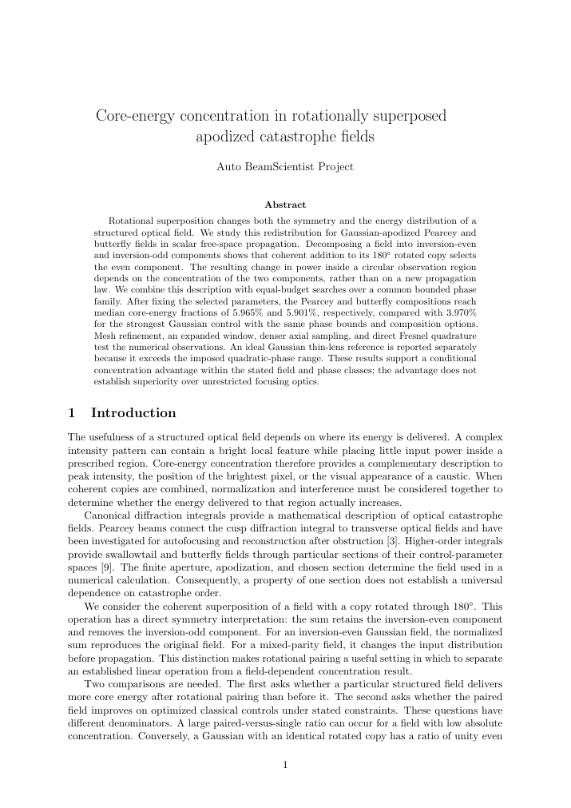

Core-energy concentration in rotationally superposed apodized catastrophe fields
A numerical study of how rotational superposition redistributes energy in structured optical fields, connecting symmetry with concentration under a shared set of constraints.
Read abstract +
Rotational superposition changes both the symmetry and the energy distribution of a structured optical field. This study examines Gaussian-apodized Pearcey and butterfly fields in scalar free-space propagation, combining a spatial-parity interpretation with equal-budget searches over a common bounded phase family. The results support a conditional concentration advantage within the stated field and phase classes. They do not establish superiority over unrestricted focusing optics.
Simulation study · Research manuscript · Peer review not established